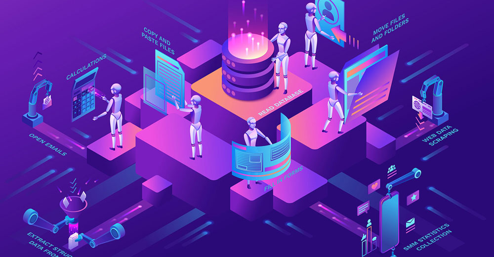
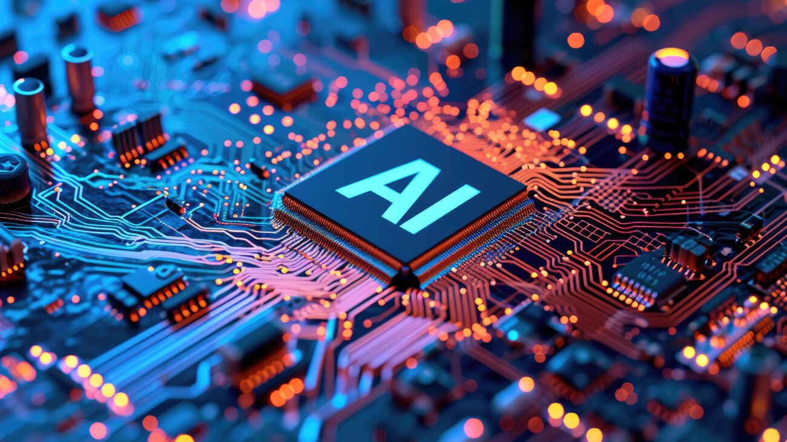
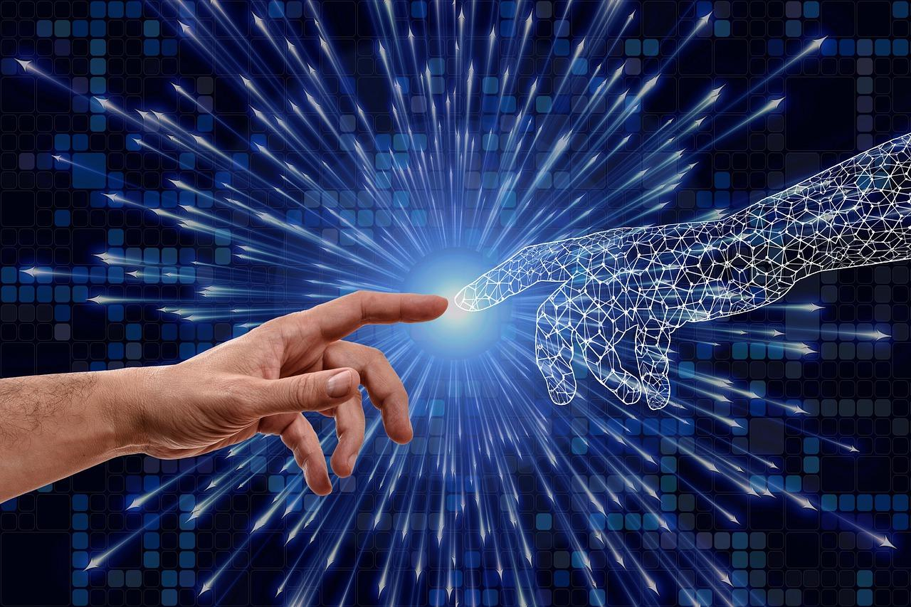

What’s Next?
Computers have already come a long way — but the future is even more exciting. We’re entering a time where computers won’t just follow instructions — they’ll think, learn, and adapt. It’s no longer just about speed or storage. It’s about possibility.
AI and Machine Learning
Artificial Intelligence is transforming everything. From self-driving cars to personal assistants like Siri and Alexa, AI is helping computers do more than ever — and it's only getting better. In the future, AI could help doctors treat patients faster, solve global problems, and even create original art and music.
Quantum Computing

Quantum computers don’t just process information faster — they process it differently. By using qubits, they can perform complex calculations that would take today’s fastest computers thousands of years. Right now, companies and scientists are racing to build quantum machines that could revolutionize science, cryptography, and beyond.
Smaller, Smarter, Everywhere
We already carry tiny supercomputers in our pockets — but the future could bring computers in glasses, clothing, or even inside our bodies. Smart homes, smart cities, and smarter machines are on the way. As they shrink, computers become more invisible — and more powerful.
The Possibilities Ahead
The future of computers is all about what we do with them. From helping people with disabilities to exploring deep space, the limits keep expanding. Whatever happens next, one thing’s clear — computers will be a big part of it.